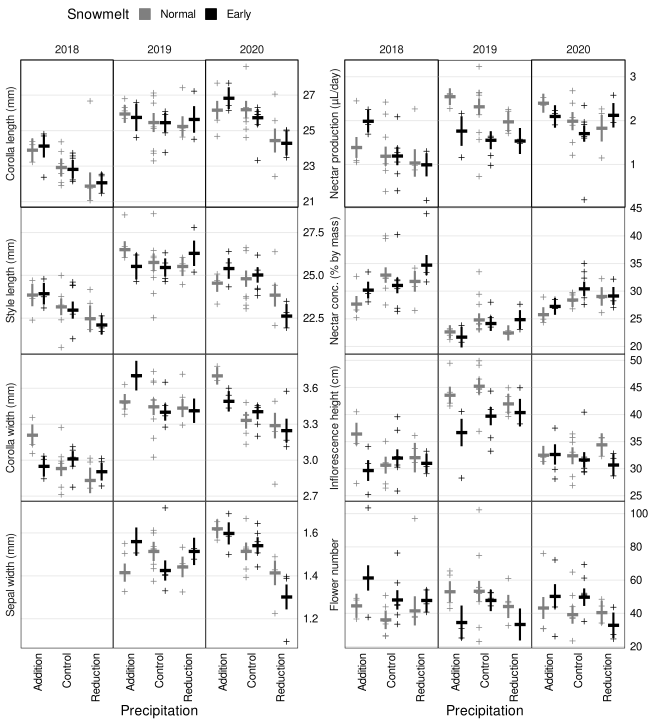

library(tidyverse)
library(lubridate)
library(lme4)
library(lmerTest)
library(MuMIn)
library(glmmTMB)
library(emmeans)
library(broom)
library(broom.mixed)
library(vegan)
library(RColorBrewer)
library(viridis)
library(gridExtra)
library(GGally)
library(ggvegan)
library(ggfortify)
library(ggnewscale)
library(ggpattern)
library(ggpmisc)
library(knitr)
knitr::opts_chunk$set(comment="", cache=F, warning = F, message = F, fig.path = "figures/", dev="svg")
options(digits=4) # for kables
load("data/maxfield_data.rda")
load("data/daily_all.rda")
options(contrasts = c("contr.sum", "contr.poly")) #needed for Type III SS
anova_table <- function(df, mod) { #for lmer models and lmerTest::anova
df %>% select(trait, term, p.value) %>%
pivot_wider(names_from=term, values_from=p.value) %>%
mutate(R2m = map_dbl(mod, ~ MuMIn::r.squaredGLMM(.x)[[1,"R2m"]]))
}
select <- dplyr::select
snow_pal_grey <- c("grey50","black")
Sample sizes
years_flowering <- with(cen.status, table(flowering_status_18 + flowering_status_19 + flowering_status_20))
count_measurements <- function(df, tr) summarize(df, across(all_of(tr), ~ sum(!is.na(.x))))
bind_rows(n_measurements = count_measurements(bind_rows(mnps, lt, pt), floraltraits),
plant_year = count_measurements(bind_rows(mnps, lt, pt) %>% group_by(year, plantid) %>%
summarize(across(all_of(floraltraits), mean, na.rm=T)), floraltraits) %>%
ungroup %>% summarize(across(all_of(floraltraits), sum)),
plant = count_measurements(bind_rows(mnps, lt, pt) %>% group_by(plantid) %>%
summarize(across(all_of(floraltraits), mean, na.rm=T)), floraltraits),
.id="sample_size") %>% column_to_rownames("sample_size") %>%
t %>% as.data.frame %>% rownames_to_column("trait") %>% as_tibble %>%
mutate(n_per_plant_year = n_measurements / plant_year,
plant_per_subplot_per_year = plant_year / 24 / 3) %>%
kable(digits=2, col.names=c("Trait", "Total measurements", "Total plant-years",
"Total unique plants measured", "Measurements / plant-year", "Plants / subplot / year"),
caption=paste0("The number of unique plants is slightly less than the plant-years because ",
round(100*years_flowering[["2"]]/(years_flowering[["1"]]+years_flowering[["2"]]),2),
"% of plants flowered in 2 years."))
The number of unique plants is slightly less than the plant-years because 3.86% of plants flowered in 2 years.
| corolla_length |
1194 |
494 |
484 |
2.42 |
6.86 |
| style_length |
1185 |
491 |
481 |
2.41 |
6.82 |
| corolla_width |
963 |
455 |
448 |
2.12 |
6.32 |
| sepal_width |
749 |
340 |
334 |
2.20 |
4.72 |
| nectar_24_h_ul |
744 |
432 |
419 |
1.72 |
6.00 |
| nectar_conc |
656 |
401 |
390 |
1.64 |
5.57 |
| height_cm |
1865 |
674 |
653 |
2.77 |
9.36 |
| flowers_est |
641 |
610 |
591 |
1.05 |
8.47 |
Trait correlations
mnps.plantyr %>% select(corolla_length, corolla_width, style_length, anther_max, anther_min, sepal_width, nectar_24_h_ul, nectar_conc, nectar_sugar_24_h_mg, height_cm, flowers_est) %>%
ggcorr(hjust=0.85, layout.exp=2, label=T, label_round=2)
Replicated split-plot models
Table 1
options(contrasts = c("contr.sum", "contr.poly"))
mod.split <- map(set_names(floraltraits),
~ lmer(mnps.plantyr[[.x]] ~ year * snow * water + (1|snow:plot) + (1|snow:plotid),
data=mnps.plantyr))
mod.split.coefs <- map_dfr(mod.split, tidy, .id="trait")
mod.split.tests <- map(mod.split, anova, ddf="Ken") %>% map_dfr(tidy, .id="trait")
mod.split.emm <- map_dfr(mod.split, ~ summary(emmeans(ref_grid(.x), ~ year * snow * water)), .id = "trait")
mod.split.tests.water <- map(mod.split, multcomp::glht,
linfct = multcomp::mcp(water = c("Addition - Control = 0", "Reduction - Control = 0"))) %>%
map_dfr(tidy, .id="trait")
anova_table(mod.split.tests, mod.split) %>%
left_join(mod.split.tests.water %>% select(trait, contrast, adj.p.value) %>%
pivot_wider(names_from=contrast, values_from=adj.p.value)) %>% kable()
| corolla_length |
0.0000 |
0.8946 |
0.0025 |
0.9912 |
0.1473 |
0.7345 |
0.8934 |
0.2280 |
0.0299 |
0.0111 |
| style_length |
0.0000 |
0.7633 |
0.0196 |
0.9797 |
0.1015 |
0.9313 |
0.2752 |
0.1847 |
0.2532 |
0.0394 |
| corolla_width |
0.0000 |
0.7192 |
0.0015 |
0.5251 |
0.6266 |
0.4335 |
0.0614 |
0.3032 |
0.0002 |
0.2541 |
| sepal_width |
0.4991 |
0.9299 |
0.0090 |
0.1803 |
0.0031 |
0.3125 |
0.0221 |
0.1140 |
0.1704 |
0.0224 |
| nectar_24_h_ul |
0.0000 |
0.2087 |
0.0354 |
0.0086 |
0.7041 |
0.6346 |
0.4633 |
0.1675 |
0.0215 |
0.8459 |
| nectar_conc |
0.0000 |
0.5226 |
0.0077 |
0.7581 |
0.6610 |
0.4919 |
0.1730 |
0.3083 |
0.0009 |
0.9985 |
| height_cm |
0.0000 |
0.0797 |
0.9885 |
0.2403 |
0.4519 |
0.4824 |
0.0828 |
0.2340 |
0.9998 |
0.9851 |
| flowers_est |
0.4994 |
0.8003 |
0.3648 |
0.0094 |
0.2555 |
0.6195 |
0.7134 |
0.0421 |
0.8799 |
0.4098 |
Figure 3
plot_split_plot <- function(emm, data, traits.plot, geom = "point", plot.emm = TRUE, facets="year") {
data.long <- data %>% select(c(all_of(traits.plot), all_of(facets), water, snow)) %>%
pivot_longer(all_of(traits.plot), names_to="trait") %>%
mutate(trait = fct_relevel(trait, traits.plot), snow=fct_relevel(snow, "Normal")) %>%
drop_na(value, water) %>% filter(trait %in% traits.plot)
traitnames.multiline <- ifelse(nchar(traitnames.units) > 30, str_replace(traitnames.units, fixed("("),"\n("), traitnames.units)
split_plot <- emm %>% filter(trait %in% traits.plot) %>%
mutate(trait = fct_relevel(trait, traits.plot), snow=fct_relevel(snow, "Normal")) %>%
ggplot(aes(x=water, color=snow)) +
labs(x="Precipitation", y="Standardized trait", color="Snowmelt") +
scale_y_continuous(position="right") + scale_x_discrete(guide=guide_axis(angle=90)) +
scale_color_manual(values=snow_pal_grey, guide=guide_legend(override.aes = list(shape=15, size=ifelse(plot.emm,5,1)))) +
theme_minimal() + theme(text=element_text(color="black", size=14), axis.text = element_text(color="black"),
axis.title.y= element_blank(),
panel.grid.major.x = element_blank(), panel.grid.minor.x=element_blank(), panel.grid.minor.y = element_blank(),
panel.border = element_rect(fill=NA, colour = "black"),
panel.spacing=unit(0, "pt"), plot.margin = margin(0,0,0,0, "pt"), legend.position = "top") +
switch(facets,
year = facet_grid(trait ~ year, scales="free_y", switch="y",
labeller = as_labeller(c(traitnames.multiline, set_names(2018:2020)))),
year.round = facet_grid(trait ~ year.round, scales="free_y", switch="y",
labeller = as_labeller(c(traitnames.multiline, set_names(levels(lt$year.round)))))) +
switch(geom,
boxplot = geom_boxplot(data=data.long, aes(y=value), position=position_dodge(width=0.8), show.legend=!plot.emm,
fatten=ifelse(plot.emm, NULL, 1), outlier.size=0.5),
violin = geom_violin(data=data.long, aes(y=value), position=position_dodge(width=0.8), show.legend=F),
point = geom_point(data=data.long, aes(y=value), position=position_dodge(width=0.8), shape=3))
if(plot.emm) { return(split_plot +
geom_linerange(aes(ymin=emmean-SE, ymax=emmean+SE,), position=position_dodge(width=0.8), size=1, show.legend=F) +
geom_point(aes(y=emmean), position=position_dodge(width=0.8), shape="-", size=16))
} else return(split_plot)
}
#Morphological traits - plot of EMMs and subplot means
split_plot.floral <- grid.arrange(
plot_split_plot(mod.split.emm, mnps.subplot, floraltraits[1:4]),
plot_split_plot(mod.split.emm, mnps.subplot, floraltraits[5:8]) +
guides(color = guide_legend(override.aes = list(color="white", shape=15, size=5))) +
theme(legend.title = element_text(color = "white"), legend.text = element_text(color = "white")), nrow=1)

Compensation
mnps.plantyr <- mnps.plantyr %>% mutate(snowwater= paste0(snow, water))
library(multcomp)#careful, this loads MASS, which overrides dplyr::select
options(contrasts = c("contr.sum", "contr.poly"))
mod.split.glht <- c(map(set_names(floraltraits),
~ lmer(mnps.plantyr[[.x]] ~ snowwater * year + (1|snow:plot) + (1|snow:plotid),
data=mnps.plantyr))) %>%
#compare early snowmelt + addition vs. normal snowmelt + control
map(glht, linfct = mcp(snowwater = c("EarlyAddition - NormalControl = 0"))) %>%
map_dfr(~ tibble(EarlyAddition_minus_NormalControl = coef(.x), p=summary(.x)$test$pvalues), .id="trait")
mod.split.glht %>% kable(caption="Comparisons of traits in subplots with early snowmelt but water addition vs. subplots with normal snowmelt and precipiation.")
Comparisons of traits in subplots with early snowmelt but water addition vs. subplots with normal snowmelt and precipiation.
| corolla_length |
0.7147 |
0.2166 |
| style_length |
0.3768 |
0.4777 |
| corolla_width |
0.1456 |
0.0328 |
| sepal_width |
0.0648 |
0.2286 |
| nectar_24_h_ul |
0.1174 |
0.5965 |
| nectar_conc |
-2.3297 |
0.1453 |
| height_cm |
-3.1022 |
0.0946 |
| flowers_est |
5.7943 |
0.4169 |
Models with snowmelt date and total precipitation
Table S2
P-values
options(contrasts = c("contr.sum", "contr.poly"))
mod.abs <- c(map(set_names(floraltraits),
~ lmer(mnps.plantyr[[.x]] ~ sun_date * precip_est_mm + (1|plot) + (1|plotid), data=mnps.plantyr)))
mod.abs.coefs <- map_dfr(mod.abs, tidy, .id="trait")
mod.abs.tests <- map(mod.abs, anova, ddf="Ken") %>% map_dfr(tidy, .id="trait")
anova_table(mod.abs.tests, mod.abs) %>% kable()
| corolla_length |
0.0000 |
0.0001 |
0.0064 |
0.2073 |
| style_length |
0.0000 |
0.0462 |
0.1515 |
0.1678 |
| corolla_width |
0.0000 |
0.0037 |
0.0617 |
0.2411 |
| sepal_width |
0.0141 |
0.0005 |
0.0017 |
0.0708 |
| nectar_24_h_ul |
0.0078 |
0.2927 |
0.8264 |
0.1351 |
| nectar_conc |
0.0000 |
0.0508 |
0.1917 |
0.2888 |
| height_cm |
0.0000 |
0.7391 |
0.6307 |
0.2249 |
| flowers_est |
0.5826 |
0.7083 |
0.7473 |
0.0010 |
Regression slopes
mod.abs.coefs %>% filter(effect=="fixed", term!="(Intercept)") %>% pivot_wider(id_cols=trait, names_from=term, values_from=c("estimate","std.error")) %>% kable()
| corolla_length |
0.0777 |
0.0797 |
-4e-04 |
0.0144 |
0.0205 |
0.0002 |
| style_length |
0.0795 |
0.0415 |
-2e-04 |
0.0145 |
0.0206 |
0.0002 |
| corolla_width |
0.0122 |
0.0092 |
0e+00 |
0.0022 |
0.0031 |
0.0000 |
| sepal_width |
0.0048 |
0.0089 |
-1e-04 |
0.0019 |
0.0025 |
0.0000 |
| nectar_24_h_ul |
0.0159 |
0.0089 |
0e+00 |
0.0059 |
0.0084 |
0.0001 |
| nectar_conc |
-0.2102 |
-0.0827 |
4e-04 |
0.0300 |
0.0419 |
0.0003 |
| height_cm |
0.2992 |
0.0201 |
-2e-04 |
0.0430 |
0.0599 |
0.0005 |
| flowers_est |
0.0916 |
0.0887 |
-6e-04 |
0.1656 |
0.2356 |
0.0019 |
Figure 4
plot_abs <- function(mod, data, traits.plot, tests=NULL, facets = "trait") {
data.long <- data %>% select(all_of(traits.plot), water, snow, year, sun_date, precip_est_mm) %>%
pivot_longer(all_of(traits.plot), names_to="trait") %>%
mutate(trait = fct_relevel(trait, traits.plot), snow=fct_relevel(snow, "Normal"),
value = (value - alltraits.mean[as.character(trait)])/alltraits.sd[as.character(trait)]) %>%
drop_na(value, water) %>% filter(trait %in% traits.plot)
precip.breaks <- seq(25,175, by=25)
grid_emmeans <- function(mods, use.rounds = F) {
grid.points <- list(sun_date=range(treatments$sun_date), precip_est_mm=precip.breaks)
if(use.rounds) map_dfr(mods, ~ summary(emmeans(.x, ~ precip_est_mm * sun_date * round, at=grid.points)), .id="trait")
else map_dfr(mods, ~ summary(emmeans(.x, ~ precip_est_mm * sun_date, at=grid.points)), .id="trait")
}
emm.grid <- mod[traits.plot] %>% grid_emmeans(use.rounds= facets=="trait.round") %>%
mutate(trait = fct_relevel(trait, traits.plot),
emmean = (emmean - alltraits.mean[as.character(trait)])/alltraits.sd[as.character(trait)])
traitnames.multiline <- ifelse(nchar(traitnames) > 30, str_replace(traitnames, fixed("("),"\n("), traitnames)
if(!is.null(tests)) {
tests.sig <- tests %>% filter(p.value < 0.05) %>%
mutate(term.abbr = str_replace_all(term, c(sun_date="Sn", precip_est_mm="Pr",`:`="\U00D7"))) %>%
group_by(trait) %>% summarize(terms.sig = paste0("(",paste(term.abbr, collapse=", "),")")) %>% deframe
traitnames.multiline[] <- paste(traitnames.multiline, replace_na(tests.sig[alltraits], ""))
}
abs_plot <- ggplot(emm.grid, aes(x=sun_date, y=emmean, color=precip_est_mm, group=precip_est_mm)) +
geom_point(data = data.long, aes(y=value, shape=year), size=2) + geom_line() +
scale_color_gradientn(colors=rev(water_pal),
values=rev(c(1, (treatments %>% group_by(water) %>% summarize(across(precip_est_mm, mean)) %>%
pull(precip_est_mm) %>% scales::rescale(from=range(precip.breaks)))[2],0)),
breaks=precip.breaks) +
labs(x="Snowmelt date", y="Standardized trait", color="Summer\nprecipitation\n(mm)", shape="Year") +
scale_y_continuous(position="right")+
theme_minimal() + theme(text=element_text(color="black", size=14), axis.text = element_text(color="black"),
panel.border = element_rect(fill=NA, colour = "black")) +
switch(facets,
trait = facet_wrap(vars(trait), scales="fixed", dir = "v", ncol=2, labeller = as_labeller(traitnames.multiline)),
trait.round = facet_grid(trait ~ round, scales="free_y", switch="y",
labeller = as_labeller(c(traitnames.multiline,
set_names(paste("Round",1:2), 1:2)))))
return(abs_plot)
}
plot_abs(mod.abs, mnps.subplot, floraltraits, mod.abs.tests) + #Morphological traits - subplot means
scale_y_continuous(limits=c(-1.7, 2.8), breaks=c(-1:2))
Compensation
mod.abs.emm.avg <- map_dfr(set_names(c("sun_date", "precip_est_mm")),
~ mod.abs %>% map(emtrends, var = .x, ~1) %>%
map(as_tibble) %>% set_names(floraltraits) %>% bind_rows(.id="trait") %>%
rename_with(.cols=ends_with("trend"), ~ "trend"), .id="predictor") %>%
mutate(predictor=fct_relevel(predictor,"sun_date"),
sd.plantyr = alltraits.sd[trait],
trend = trend / sd.plantyr, SE = SE / sd.plantyr)
(mod.abs.emm.avg.compensate <- mod.abs.emm.avg %>%
pivot_wider(names_from=predictor, values_from=c(trend, SE), id_cols=c(trait)) %>%
mutate(precip_mm_per_snow_day = trend_sun_date / trend_precip_est_mm,
SE = abs(precip_mm_per_snow_day) * # propagate error in SEs using formula for quotients
sqrt((SE_precip_est_mm / trend_precip_est_mm)^2 + (SE_sun_date / trend_sun_date)^2),
.keep="unused") %>% kable(caption="The amount of precipiation (mm) required to compensate for snowmelt occuring 1 day earlier."))
The amount of precipiation (mm) required to compensate for snowmelt occuring 1 day earlier.
| corolla_length |
1.805 |
0.4375 |
| style_length |
5.416 |
1.6122 |
| corolla_width |
2.635 |
0.5246 |
| sepal_width |
-1.069 |
0.9923 |
| nectar_24_h_ul |
2.103 |
0.5986 |
| nectar_conc |
6.632 |
1.7649 |
| height_cm |
-28.052 |
28.6434 |
| flowers_est |
3.819 |
16.7568 |
Models with soil moisture
Table S1
# VWC split-plot analysis on subplot means (for the whole measurement period)
sm.mod <- lmer(VWC ~ year * snow * water + (1|snow:plot)+ (1|snow:plotid), data=sm.subplotyear)
anova(sm.mod) %>% kable()
| year |
21.0823 |
10.5411 |
2 |
34.783 |
50.4914 |
0.0000 |
| snow |
1.1642 |
1.1642 |
1 |
5.046 |
5.5765 |
0.0642 |
| water |
51.0709 |
25.5354 |
2 |
15.012 |
122.3132 |
0.0000 |
| year:snow |
2.3509 |
1.1754 |
2 |
34.782 |
5.6303 |
0.0076 |
| year:water |
4.4296 |
1.1074 |
4 |
36.320 |
5.3044 |
0.0018 |
| snow:water |
0.5762 |
0.2881 |
2 |
15.013 |
1.3800 |
0.2817 |
| year:snow:water |
0.3480 |
0.0870 |
4 |
36.320 |
0.4168 |
0.7954 |
Soil moisture in each treatment
sm.mod %>% emmeans(~ snow) %>% summary() %>% select(-c(df,lower.CL,upper.CL),mean_VWC=emmean) %>% kable()
| Early |
4.503 |
0.1984 |
| Normal |
5.128 |
0.1763 |
sm.mod %>% emmeans(~ water) %>% summary() %>% select(-c(df,lower.CL,upper.CL),mean_VWC=emmean) %>% kable()
| Addition |
6.184 |
0.1638 |
| Control |
4.389 |
0.1430 |
| Reduction |
3.873 |
0.1638 |
Table S3
options(contrasts = c("contr.sum", "contr.poly"))
mod.sm <- c(map(set_names(floraltraits),
~ lmer(mnps.plantyr[[.x]] ~ year * VWC + (1|plotid), data=mnps.plantyr)))
mod.sm.coefs <- map_dfr(mod.sm, tidy, .id="trait")
mod.sm.tests <- map(mod.sm, anova, ddf="Ken") %>% map_dfr(tidy, .id="trait")
anova_table(mod.sm.tests, mod.sm) %>% kable()
| corolla_length |
0.0066 |
0.0129 |
0.4492 |
0.2069 |
| style_length |
0.1929 |
0.0021 |
0.8117 |
0.1767 |
| corolla_width |
0.0043 |
0.0002 |
0.0460 |
0.2872 |
| sepal_width |
0.0077 |
0.0104 |
0.0034 |
0.0749 |
| nectar_24_h_ul |
0.2627 |
0.0001 |
0.1098 |
0.1591 |
| nectar_conc |
0.0002 |
0.0106 |
0.3203 |
0.2835 |
| height_cm |
0.5134 |
0.0808 |
0.1761 |
0.2177 |
| flowers_est |
0.7130 |
0.0821 |
0.7399 |
0.0118 |
Figure 5
plot_sm <- function(mod, data, traits.plot, tests=NULL) {
data.long <- data %>% select(all_of(traits.plot), water, snow, year, sun_date, precip_est_mm, VWC) %>%
pivot_longer(all_of(traits.plot), names_to="trait") %>%
mutate(trait = fct_relevel(trait, traits.plot), snow=fct_relevel(snow, "Normal"),
value = (value - alltraits.mean[as.character(trait)])/alltraits.sd[as.character(trait)]) %>%
drop_na(value, water) %>% filter(trait %in% traits.plot)
VWC.range <- range(data$VWC, na.rm=T)
emm.grid <- mod[traits.plot] %>%
map_dfr(~ emmeans(.x, ~ year*VWC, at=list(VWC=seq(from=floor(VWC.range[1]*10)/10, to=ceiling(VWC.range[2]*10)/10, by=0.1))) %>% as_tibble(), .id="trait") %>%
mutate(trait = fct_relevel(trait, traits.plot),
emmean = (emmean - alltraits.mean[as.character(trait)])/alltraits.sd[as.character(trait)]) %>%
left_join(data %>% drop_na(VWC) %>% group_by(year) %>% summarize(VWC.min = min(VWC), VWC.max=max(VWC))) %>%
group_by(year) %>% filter(VWC >= VWC.min-0.1, VWC <= VWC.max+0.1)
traitnames.multiline <- ifelse(nchar(traitnames) > 30, str_replace(traitnames, fixed("("),"\n("), traitnames)
if(!is.null(tests)) {
tests.sig <- tests %>% filter(p.value < 0.05) %>%
mutate(term.abbr = str_replace_all(term, c(year="Yr", VWC="SM",`:`="\U00D7"))) %>%
group_by(trait) %>% summarize(terms.sig = paste0("(",paste(term.abbr, collapse=", "),")")) %>% deframe
traitnames.multiline[] <- paste(traitnames.multiline, replace_na(tests.sig[alltraits], ""))
}
sm_plot <- ggplot(emm.grid, aes(x=VWC, y=emmean, color=year, group=year)) +
facet_wrap(vars(trait), scales="fixed", dir="v", ncol=ifelse(length(traits.plot)>3,2,4), labeller = as_labeller(traitnames.multiline))+
geom_point(data = data.long, aes(y=value, color=year), size=1) +
geom_line(size=2) +
scale_color_manual(values=year_pal) + ylab("Standardized trait") + labs(color="Year") +
#coord_fixed() +
theme_minimal() + theme(text=element_text(color="black", size=14), axis.text = element_text(color="black"),
panel.border = element_rect(fill=NA, colour = "black"))
return(sm_plot)
}
plot_sm(mod.sm, mnps.plantyr, floraltraits, mod.sm.tests) +
scale_y_continuous(limits=c(-4.3,5)) + xlab("Summer mean of soil moisture in subplot (%VWC)")
Figure S1
timings_labels <- c(snowcloth="Snow cloths applied to early plots",
meltdates="Mean early and normal snowmelt timing",
waterdates="Summer precipitation treatments applied",
sm="Soil moisture recorded", ph="Inflorescence height recorded",
mt="Floral morphology recorded", nt="Nectar traits recorded",
pt= "Physiology traits recorded", lt="Vegetative traits recorded",
sds="Flower collection period", cen="Rosette size and survival recorded")
plot_timings <- function(data) {
data %>% mutate(variable=fct_reorder(variable, begin, na.rm=T, .desc=T),
drawline = ifelse(variable %in% c("lt","meltdates"), NA, TRUE)) %>%
ggplot(aes(y=variable, color=year))+
geom_linerange(aes(xmin=begin, xmax=end, linetype=drawline),
position = position_dodge2(width=0.7, reverse = T), size=1.2, show.legend=FALSE) +
geom_text(data=data %>% drop_na(plots) %>% filter(year=="2019"),
aes(x = end+7, label=paste(ifelse(nchar(plots)>1, "Plots","Plot"), str_replace(plots,","," & "))),
position = position_dodge2(width=0.8, reverse = T), size=4, hjust=0, show.legend=FALSE)+
geom_point(aes(x=begin), position = position_dodge2(width=0.7, reverse = T), shape=15, size=2)+
geom_point(aes(x=end), position = position_dodge2(width=0.7, reverse = T), shape=15, size=2) +
scale_color_manual("Year", values=year_pal, guide=guide_legend(override.aes = list(size=5))) +
scale_y_discrete("", labels=timings_labels)+
scale_x_continuous("Day of year", breaks=seq(80,240, by=20)) +
theme_minimal() + theme(legend.position = "top", text=element_text(size=14, color="black"), axis.text = element_text(color="black"),
panel.border = element_rect(fill=NA, colour = "black"))
}
plot_timings(filter(timings, !variable %in% c("sds","lt","pt","cen")))
Figure S2
groundcover %>% mutate(first_snow_day=first_snow_day-365) %>% select(-first_snow_day) %>%
pivot_longer(ends_with("day"), names_to="threshold", values_to="day") %>% drop_na(day) %>% select(-starts_with("first")) %>%
mutate(threshold = fct_reorder(factor(threshold),day, na.rm=T, .desc=T)) %>%
ggplot(aes(x=year, y=day, color=threshold)) +
annotate("rect", xmin=2017.5, xmax=2020.5, ymin=-Inf, ymax=Inf, fill="lightblue")+
geom_line(aes(group=year), size=1.5)+ geom_smooth(method="lm", se=F) +
geom_point(aes(shape=source)) + scale_shape_manual("Source",values=c(19,17), labels=c("Observed", "Inferred from peak runoff")) +
scale_x_continuous(breaks=seq(1940,2020, by=10), minor_breaks = scales::pretty_breaks(n = 100), position = "top") + scale_y_continuous(n.breaks=10)+
scale_color_grey(labels=c(paste(c(0,50,100),"cm")), start=0, end=0.85) +
labs(x="Year", y="Day of year", color="First day snowpack below") + theme_minimal() + theme(text=element_text(color="black", size=14), axis.text = element_text(color="black"), panel.border = element_rect(fill=NA, colour = "black"))
meltdate.mod <- lm(first_0_cm_day ~ year, data=groundcover)
early.melt_offset <- treatments %>% filter(snow=="Early") %>% pull(melt_offset)
yearrange <- paste(range(groundcover$year), collapse=" - ")
meltdate.mod %>% tidy() %>% kable(caption=paste("Regression of snowmelt date vs. year from",yearrange))
Regression of snowmelt date vs. year from 1935 - 2021
| (Intercept) |
411.2126 |
97.0568 |
4.237 |
0.0001 |
| year |
-0.1361 |
0.0491 |
-2.775 |
0.0068 |
cat("Snowmelt is advancing",-10*tidy(meltdate.mod)$estimate[2],"+-",10*tidy(meltdate.mod)$std.error[2], "days per decade")
Snowmelt is advancing 1.361 +- 0.4906 days per decade
cat("Early snow treatments melted", -round(mean(early.melt_offset),1), "+-", round(sd(early.melt_offset),1), "days earlier (mean +- SD), which is equivalent to", mean(early.melt_offset)/tidy(meltdate.mod)$estimate[2], "+-", (mean(early.melt_offset)/tidy(meltdate.mod)$estimate[2])*sqrt((sd(early.melt_offset)/mean(early.melt_offset))^2 + (tidy(meltdate.mod)$std.error[2]/tidy(meltdate.mod)$estimate[2])^2), "years of future warming")#propagate error from SD of treatment advance and SE of regression
Early snow treatments melted 5.7 +- 2.2 days earlier (mean +- SD), which is equivalent to 41.78 +- 22.12 years of future warming
Figure S3
max_VWC <- max(sm.subplot$VWC, na.rm=T)
ggplot(sm.subplot, aes(x=yday(date))) +
facet_wrap(vars(year), ncol=1) +
geom_segment(data=waterdates %>% pivot_wider(names_from=precip_treatments, values_from=c(day,date)),
aes(x=day_started, xend=day_ended, y=max_VWC+0.5, yend=max_VWC+0.5)) +
geom_col(data=daily_precip_est, aes(x=yday(date), y=EPA_NOAA_filled), fill=brewer.pal(7, "Set3")[7]) +
geom_line(data=daily_precip_est, aes(y=VWC_Control_4*100), color=brewer.pal(7, "Set3")[6], size=1) +
geom_point(aes(shape=snow, color=water, y = VWC)) +
geom_line(data=sm.subplot %>% group_by(water, snow, year, date) %>% summarize(VWC=mean(VWC, na.rm=T)), aes(linetype=snow, color=water, y = VWC)) +
scale_color_manual(values=water_pal) + scale_linetype_manual(values=c(2,1)) +
geom_vline(data=meltdates, aes(xintercept=sun_date, linetype=snow), color="black", show.legend=F) +
coord_cartesian(xlim=c(110, 230), ylim=c(0, max_VWC+1), expand=F)+
labs(x="Day of year", y="Mean soil moisture in subplot (%VWC) / Precipitation (mm)", color="Precipitation", shape="Snowmelt", linetype="Snowmelt") + theme_minimal() + theme(legend.key.width = unit(2, "lines"), text=element_text(color="black", size=14), axis.text = element_text(color="black"), panel.border = element_rect(fill=NA, colour = "black"))
Figure S4
mt.morph.plantyr <- mt.plantyr[,c("corolla_length", "corolla_width","style_length","anther_max","anther_min","year","VWC")] %>% drop_na()
options(contrasts = c("contr.treatment", "contr.poly"))
mt.rda <- rda(scale(select(mt.morph.plantyr, !c(year, VWC))) ~ VWC * year, data=mt.morph.plantyr)
mt.rda.df <- fortify(update(mt.rda, ~ VWC + year))#drop interaction
ggplot(mapping=aes(x=RDA1, y=RDA2, label=Label)) +
geom_point(data=mt.rda.df %>% filter(Score=="sites") %>% bind_cols(mt.morph.plantyr), aes(color=VWC))+
geom_segment(data=mt.rda.df %>% filter(Label=="VWC"), aes(x=0,y=0,xend=RDA1*3, yend=RDA2*3),
arrow=arrow(length=unit(0.5, "lines")), size=1.5)+
geom_text( data=mt.rda.df %>% filter(Label=="VWC"), aes(x=RDA1*3.7, y=RDA2*3.7, angle=atan(RDA2/RDA1)*180/pi), label="Soil moisture")+
geom_segment(data=mt.rda.df %>% filter(Score=="species"), aes(x=0,y=0,xend=RDA1, yend=RDA2),
arrow=arrow(length=unit(0.5, "lines")))+
geom_text( data=mt.rda.df %>% filter(Score=="species"), aes(x=RDA1*1.7, y=RDA2*1.7, angle=atan(RDA2/RDA1)*180/pi,
label = c(traitnames, c("anther_max"="Max stamen length", "anther_min"="Min stamen length"))[as.character(Label)] %>% str_remove(fixed(" (mm)"))), size=3)+
geom_text(data=mt.rda.df %>% filter(Score=="centroids"), aes(label=str_remove(Label, "year")), fontface=2, size=6)+
scale_color_viridis("Soil\nmoisture\n(%VWC)", direction=-1, option="plasma") + coord_fixed() +
scale_x_continuous(expand=expansion(mult=.16), breaks=c(-2,0,2))+ theme_minimal() +
theme(panel.grid.minor=element_blank(), text=element_text(color="black", size=14), axis.text = element_text(color="black"),
panel.border = element_rect(fill=NA, colour = "black"))
RDA summary and test
mt.rda
Call: rda(formula = scale(select(mt.morph.plantyr, !c(year, VWC))) ~
VWC * year, data = mt.morph.plantyr)
Inertia Proportion Rank
Total 5.000 1.000
Constrained 1.221 0.244 5
Unconstrained 3.779 0.756 5
Inertia is variance
Eigenvalues for constrained axes:
RDA1 RDA2 RDA3 RDA4 RDA5
1.150 0.058 0.010 0.003 0.000
Eigenvalues for unconstrained axes:
PC1 PC2 PC3 PC4 PC5
2.495 0.671 0.400 0.121 0.092
anova(mt.rda, by="term")
Permutation test for rda under reduced model
Terms added sequentially (first to last)
Permutation: free
Number of permutations: 999
Model: rda(formula = scale(select(mt.morph.plantyr, !c(year, VWC))) ~ VWC * year, data = mt.morph.plantyr)
Df Variance F Pr(>F)
VWC 1 0.57 67.20 0.001 ***
year 2 0.64 37.49 0.001 ***
VWC:year 2 0.02 0.99 0.362
Residual 446 3.78
---
Signif. codes: 0 '***' 0.001 '**' 0.01 '*' 0.05 '.' 0.1 ' ' 1
Figure S6
summary_EPA_NOAA <- daily_filled_7am %>% filter(year(date)>1989, year(date)<2021, EPA_NOAA_filled > 2) %>%
mutate(drought_days = c(0,diff(date)), year=year(date)) %>% filter(ground_covered=="smmr") %>%
select(year, date, drought_days) %>% group_by(year) %>% summarize(max_drought_days_2mm = max(drought_days)) %>%
left_join(daily_filled_7am %>% filter(year(date)>1989, year(date)<2021, ground_covered=="smmr") %>% group_by(year=year(date)) %>%
summarize(snow_free_days = n(),
rain_days_2mm = sum(EPA_NOAA_filled > 2, na.rm=T),
prop_rain_days_2mm = rain_days_2mm / snow_free_days,
max_precip_mm = max(EPA_NOAA_filled, na.rm=T),
avg_precip_mm = mean(EPA_NOAA_filled, na.rm=T),
total_precip_mm = sum(EPA_NOAA_filled, na.rm=T)))
summary_names <- c(snow_free_days = "Snowmelt to first permanent snowfall (days)",
max_drought_days_2mm="Longest drought < 2 mm/day (days)",
rain_days_2mm = "Days with > 2 mm precipitation",
prop_rain_days_2mm = "Proportion days > 2 mm precipitation",
max_precip_mm = "Maximum precipitation (mm/day)",
avg_precip_mm = "Average precipitation (mm/day)",
total_precip_mm = "Total precipitation (mm)")
summary_EPA_NOAA %>% pivot_longer(!year) %>% filter(!name %in% c("rain_days_2mm","max_precip_mm","total_precip_mm")) %>%
ggplot(aes(y=value, x=year))+
facet_wrap(vars(name), scales="free_y", labeller=as_labeller(summary_names)) +
annotate("rect", xmin=2017.5, xmax=2020.5, ymin=-Inf, ymax=Inf, fill="lightblue")+
geom_smooth(method="lm", color="black", se=F) + geom_point(color="grey60") + labs(x="Year", y="") +
stat_poly_eq(formula = y ~ x, aes(label = paste(..eq.label.., ..rr.label.., ..p.value.label.., sep = "~~~")), parse = T) +
theme_minimal() +theme(axis.title.y= element_blank(), text=element_text(color="black", size=14),
axis.text = element_text(color="black"), panel.border = element_rect(fill=NA, colour = "black"))